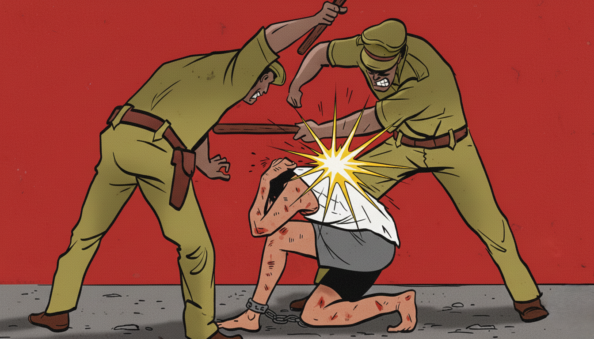
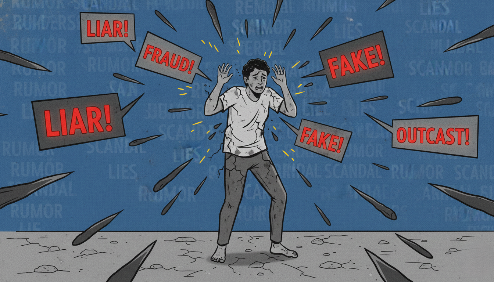
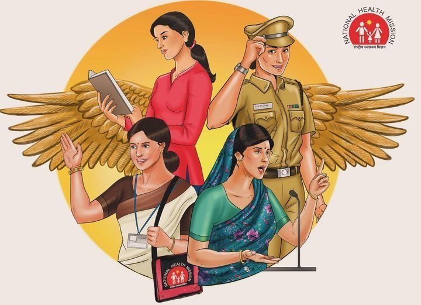
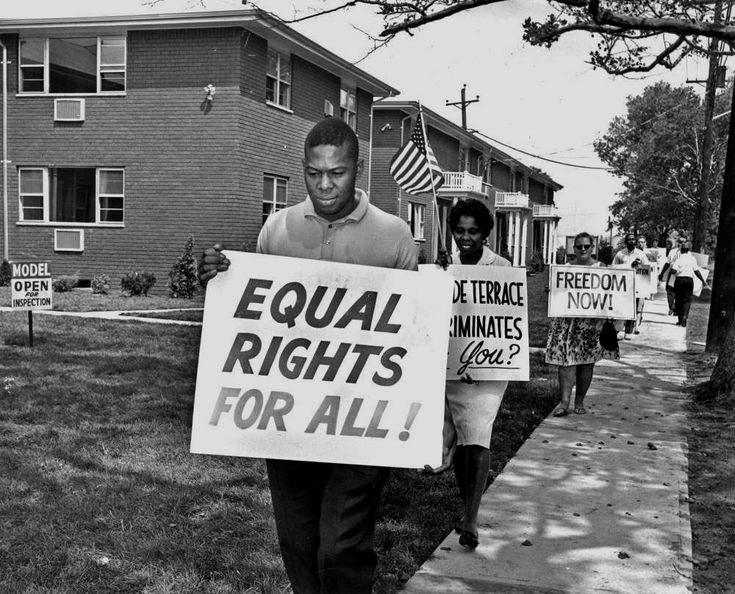
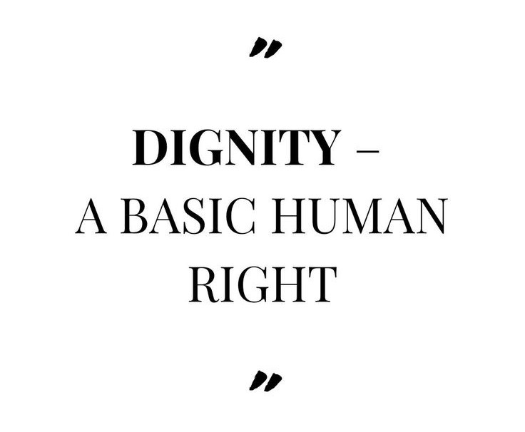
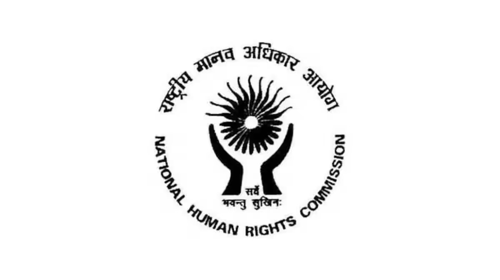

Police abuse and illegal detention issues arise when individuals are unlawfully detained, harassed, or subjected to physical or mental abuse by law enforcement authorities. Such actions violate fundamental human rights and personal liberty , requiring immediate legal intervention.

Threats, abduction, and personal safety matters arise when an individual’s liberty, security, or freedom of movement is endangered. Such situations may involve intimidation, unlawful confinement, missing persons, or coercive acts , requiring urgent legal protection.
Reputation, defamation, and personal attack matters arise when false, misleading, or malicious statements harm an individual’s dignity, social standing, or professional life. Such acts may violate the right to reputation, privacy, and personal dignity , requiring appropriate legal protection.

Privacy and personal life interference issues arise when an individual’s private space, personal choices, or confidential information are unlawfully intruded upon. Such interference may violate the right to privacy, dignity, and personal autonomy , requiring appropriate legal protection.
Family, property, and inheritance rights issues arise when individuals are unlawfully denied their lawful share, possession, or enjoyment of family or ancestral property. Such disputes may affect dignity, security, and the right to equality within the family , requiring proper legal protection.
Women and child rights protection matters arise when women or children face abuse, exploitation, neglect, or denial of their basic rights. Such violations affect safety, dignity, equality, and overall well-being , requiring timely legal protection and support.

Discrimination and equality rights issues arise when individuals are treated unfairly or denied equal opportunities based on personal or social identity. Such actions may violate the right to equality, dignity, and equal protection of law , requiring appropriate legal intervention.

Right to life, dignity, and human treatment issues arise when individuals are subjected to inhuman, degrading, or unfair treatment that affects their basic existence and self-respect. Such violations strike at the core of fundamental human rights and personal dignity , requiring urgent legal protection.

Prisoner, undertrial, and detention rights issues arise when individuals in custody are denied lawful treatment, fair process, or basic human dignity. Such violations may affect liberty, health, and access to justice , requiring timely legal intervention.
Victim rights and compensation matters arise when individuals suffer harm due to unlawful acts and seek recognition, protection, and fair relief. The law provides remedies to ensure dignity, support, and just compensation for victims , requiring timely legal guidance.
Human rights complaint and commission proceedings arise when individuals approach statutory bodies for redressal of violations of basic human rights. These forums provide oversight, inquiry, and recommendations for relief and accountability , making proper legal guidance important.

Phone: +91 7899469002
Email: sarada.law.chamber@gmail.com